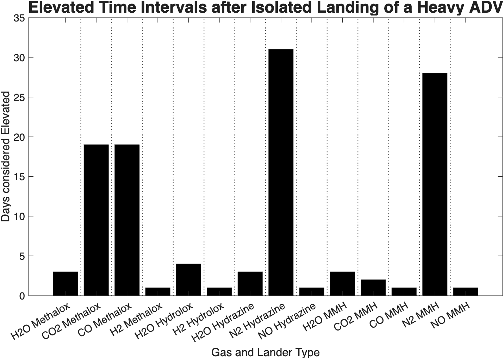
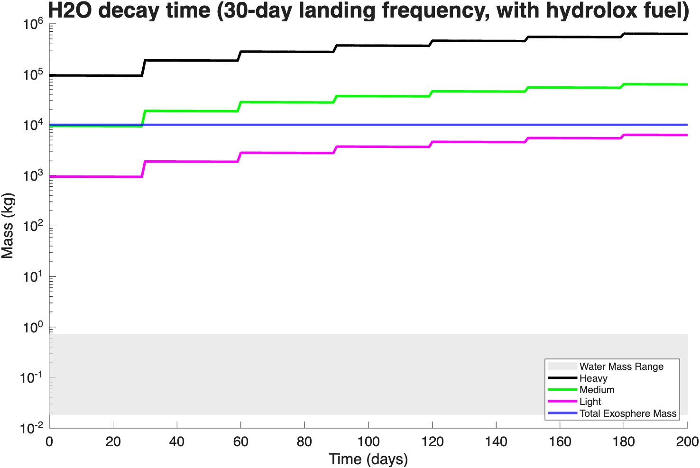

MIT Engineering Systems Lab
Evaluating Environmental Effects of Long-Duration Human Activities on the Moon
September 2025 – September 2026



Summary
I quantified and visualized the short- and long-term effects of repeated vehicle landings on the lunar exosphere. As flight rates increase, landers on the scale of Starship and Blue Moon will release large amounts of propellant exhaust during descent and ascent. Whether the propellant is methalox or hydrolox, those injections are large relative to the Moon’s thin atmosphere and can interfere with measurements from instruments already operating there.
Photolysis removes the exhaust slowly. In the cases I examined, the exosphere does not return to its natural level for at least 30 days. With more frequent landings, the composition of the lunar exosphere could be altered persistently unless operating restrictions are established in the near term.